Overlay · vector · portrait phone
Altitude ruler and map HUD
Hairline linework, one accent, no fills except the label plate. The ruler compresses altitude — near-linear to 2 000 ft, logarithmic to 45 000 — so rooftop traffic and cruising traffic both land on a readable scale.

390 × 844 · DAY · INK #12263C

390 × 844 · NIGHT · INK #E7EDF4

375 × 667 · SAME ANCHORS
Ruler compression
p(a) = 0.30 · a / 2000
for a ≤ 2 000 ft
p(a) = 0.30 + 0.70 · ln(a / 2000) / ln(22.5)
for a > 2 000 ft
y = yGround − p(a) · bandHeight
for a ≤ 2 000 ft
p(a) = 0.30 + 0.70 · ln(a / 2000) / ln(22.5)
for a > 2 000 ft
y = yGround − p(a) · bandHeight
| GND | p 0.000 | y 740 |
| 1 000 | p 0.150 | y 632 |
| 2 000 | p 0.300 | y 524 |
| 10 000 | p 0.662 | y 263 |
| 20 000 | p 0.818 | y 151 |
| 40 000 | p 0.973 | y 39 |
Linework and type
axis / major tick 1 px
minor tick 0.75 px @ 55%
label plate stroke 0.75 px @ 28%
leader line 0.75 px @ 70%
tick labels 11 px / 0.06 em
captions 9 px / 0.18 em caps
callsign 12 px semibold
true altitude 10 px @ 78%
tilt readout 15 px
minor tick 0.75 px @ 55%
label plate stroke 0.75 px @ 28%
leader line 0.75 px @ 70%
tick labels 11 px / 0.06 em
captions 9 px / 0.18 em caps
callsign 12 px semibold
true altitude 10 px @ 78%
tilt readout 15 px
No glow, no drop shadow, no filled panels. The label plate is the only fill in the system — 55% white by day, 50% near-black at night — so the overlay never reads as a surface sitting in front of the sky.
Palette and anchors
#12263C ink · day
#E7EDF4 ink · night
#B0246E accent · day
#E2589B accent · night
ruler x = W − 104, y = 42, h = H − 84
compass x = 16, y = 24, 76 × 76
zoom + tilt x = 16, y = H − 132
labels at each aircraft screen point
compass x = 16, y = 24, 76 × 76
zoom + tilt x = 16, y = H − 132
labels at each aircraft screen point
Every component is its own SVG with its own viewBox, so the app anchors them to the real viewport rather than scaling one fixed canvas. The ruler keeps a uniform scale (xMaxYMid meet); regenerate its ticks from p(a) when you want the band to fill an exact height.
Components at nominal size
DAY · INK #12263C · ACCENT #B0246E


NIGHT · INK #E7EDF4 · ACCENT #E2589B